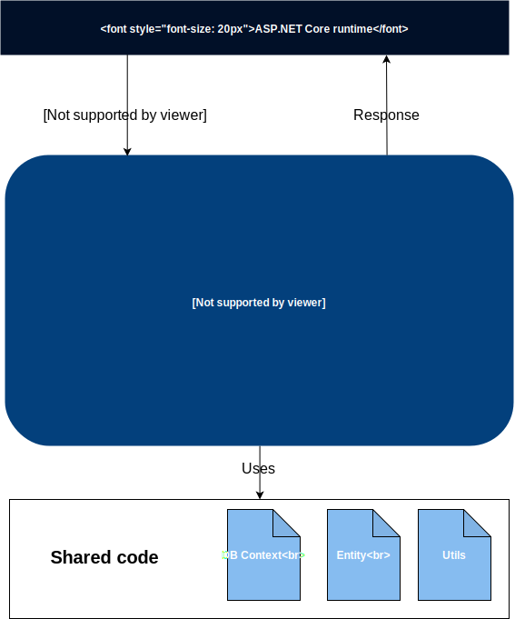
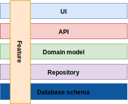
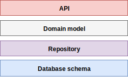
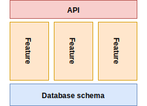
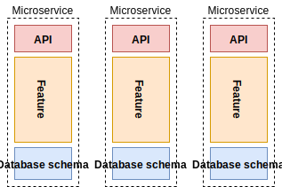
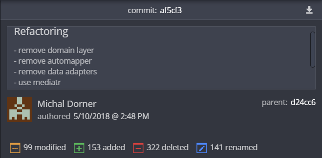

Vertical-Slice Architecture
Scope of this presentation

Scope of this presentation

Why talk about architecture on this level?
Beginning of a greenfield project
- With small amount of code 'everything' looks good
- Requirements are changing
- Temptation to just reuse template from last project
One year later
- Maintainability issues
- Extensibility issues
- Performance issues
- Bugs
- Developer unhappiness
It's too late to change it
- It would cost too much
- Heavy risk of regressions
Which software architecture is most common?
Big ball of mud
Common in practice due to business pressures, developer turnover and code entropy.
1. Choosing right architecture from beginning is very important
Common patterns
"Everything in a Controller"
- Often used as a starting point
- Popular among students / junior devs
"Everything in a Controller"
"Everything in a Controller"
using BasicArchitecture.Data;
using BasicArchitecture.Data.Entities;
using Microsoft.AspNetCore.Mvc;
using System.Collections.Generic;
using System.Linq;
namespace BasicArchitecture.Controllers
{
[Route("api/[controller]")]
[ApiController]
public class UsersController : ControllerBase
{
private readonly DataContext _dataContext;
public UsersController(DataContext dataContext)
{
_dataContext = dataContext;
}
[HttpGet]
public ActionResult<IEnumerable<UserEntity>> Get()
{
return _dataContext.Users.ToList();
}
}
}
Later you add
- Request validation
- Authorization rules
- Complex business logic
- Mapping between DB model and API model
- ...other stuff
Controller now have 1K+ lines of code
Unmaintainable big ball of mud.
This architecture doesn't scale with added code.
Types of scalability
- Usage Scalability
- number of requests
- Scalability over period
- size of stored data
- Code scalability
- amount of code
2. Think about code scalability
- Single responsibility principle
- Open–closed principle
Domain-Driven Design
Building blocks
- Value object
- Entity
- Aggregate
- Domain Event
- Service
- Repository
- Factory
HTTP is a REQUEST / RESPONSE protocol
- Model instance doesn't exists between requests
- It's a temporary representation of state based on request and data in database
Layers in Domain-Driven Design service
- API (REST/JSON)
- Domain model
- Repository
- Database schema

It's good right?
...well, it has some drawbacks
DDD pitfalls: Mapping
- Mapping from DB schema to domain entities
- Mapping from domain entities to API contract models
DDD pitfalls: Mapping
Error prone, boilerplate code without business value
DDD pitfalls: Repository
- Abstraction of abstraction (DbContext)
- Fat repository - aggregate of all data access of entity
- Methods used only once
- Reuse of method which doesn't fit use-case
DDD pitfalls: Performance
- Developers don't think about database
- Query more data then needed
- Multiple queries with manual join
DDD pitfalls: Anemic Domain Model
- "Domain models" without behavior
- Class with bunch of getters and setters
- Anti-pattern
DDD pitfalls: Adding new feature
- Modify API layer
- Modify Domain layer
- Modify Repository layer
- don't forget about mappers :)
DDD pitfalls: Adding new feature
Microsoft recommends that it be applied only to complex domains where the model and the linguistic processes provide clear benefits in the communication of complex information, and in the formulation of a common understanding of the domain.
3. Use DDD only when business complexity is bigger issue than added abstractions
Vertical (Feature) Slice
Layers
Vertical slices
Microservices
Layers
- Localizing technology aspects
- Direct dependency on lower layer
- Invisible semantic dependency on upper layer
- Business aspects spread across all layers
Vertical slices
- Localizing business aspects
- Minimize coupling between slices
- Maximize coupling in a slice
- Single deployment unit
Microservices
- Localizing business aspects
- Multiple deployment units
Vertical slices
You take a normal "n-tier" architecture and remove the gates and barriers across those layers, and couple along the axis of change
Scopes of feature slice
- Module
- Controller
- Route
4. Couple code along the axis of change
CQRS
CQRS - vertical slice per Route
- Query
- GET
- Command
- POST
- PUT
- DELETE
Each command/query can decide for itself how to best fulfill the requirements
- Update entity using ORM
- Query projection
- Domain model (DDD)
Transaction Script
Organizes business logic by procedures where each procedure handles a single request from the presentation
The glory of Transaction Script is its simplicity. Organizing logic this way is natural for applications with only a small amount of logic, and it involves very little overhead either in performance or in understanding.
Martin Flower
5. Treat each request as a distinct use case
Case Study
Apprentince Management System
- Angular 5
- ASP.NET Core
Before
- 394 .cs files
- 19 050 (C#) LOC
Refactoring
After
- 242 .cs files (-152)
- 13 892 (C#) LOC (-5158)
Solution structure
- apps/
- Host
- ...
- libs/
- Core
- Data
- Features
Solution structure
- Core
- Authorization/
- Models/
- Repository/
- Services/
- Utils/
Solution structure
- Data
- Entity/
- EntityConfiguration/
- Migrations/
- DatabaseContext.cs
Solution structure
- Feature 1
- Controller.cs
- Command/
- Update.cs
- Delete.cs
- Query/
- GetAll.cs
- GetById.cs
Controller
using FeatureSlice.Core.Models;
using FeatureSlice.Features.Users.Query;
using MediatR;
using Microsoft.AspNetCore.Mvc;
using System;
using System.Collections.Generic;
using System.Linq;
using System.Threading.Tasks;
namespace FeatureSlice.Features.Users
{
[Route("api/users")]
[ApiController]
public class UserController : ControllerBase
{
private readonly IMediator _mediator;
public UserController(IMediator mediator)
{
_mediator = mediator;
}
[HttpGet]
public async Task<ActionResult<IEnumerable<UserModel>>> GetAll()
{
var query = new GetUsersQuery();
var result = await _mediator.Send(query);
return result;
}
[HttpGet("{id}")]
public async Task<ActionResult<UserModel>> Get(Guid id)
{
var query = new GetUsersQuery { Id = id };
var result = (await _mediator.Send(query)).FirstOrDefault();
return result;
}
}
}
Query
using FeatureSlice.Core.Models;
using FeatureSlice.Core.Repository;
using FeatureSlice.Data;
using LinqKit;
using MediatR;
using Microsoft.EntityFrameworkCore;
using System;
using System.Collections.Generic;
using System.Linq;
using System.Threading;
using System.Threading.Tasks;
namespace FeatureSlice.Features.Users.Query
{
public sealed class GetUsersQuery : IRequest<List<UserModel>>
{
public Guid? Id { get; set; }
}
internal sealed class GetlAllUsersQueryHandler : IRequestHandler<GetUsersQuery, List<UserModel>>
{
private readonly DataContext _dataContext;
public GetlAllUsersQueryHandler(DataContext dataContext)
{
_dataContext = dataContext;
}
public async Task<List<UserModel>> Handle(GetUsersQuery request, CancellationToken cancellationToken)
{
var users = _dataContext.Users.AsExpandable();
if (request.Id.HasValue)
{
users = users.Where(u => u.Id == request.Id);
}
return await users
.Select(user => UserModelEx.ReadFrom.Invoke(user))
.ToListAsync(cancellationToken);
}
}
}LinqKit
using FeatureSlice.Core.Models;
using FeatureSlice.Data.Entities;
using System;
using System.Linq.Expressions;
namespace FeatureSlice.Core.Repository
{
public static class UserModelEx
{
public static readonly Expression<Func<UserEntity, UserModel>> ReadFrom =
user => new UserModel
{
Id = user.Id,
FirstName = user.FirstName,
LastName = user.LastName,
};
}
}Result of refactoring
- Amount of code was significantly reduced
- Easier to navigate in a code base
- Extensions & modifications implemented much easier
- Reusable queries using LinqKit
Summary
- Choosing right architecture from beginning is very important
- Think about code scalability
- Use domain-driven design only when business complexity is bigger issue than added abstractions
- Couple code along the axis of change
- Treat each request as a distinct use case